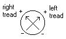

The main themes are justice and accepting culpability. You remotely access a robot on the spaceship that was the scene of a crime to figure out where it is located and, in the end, make sure that those responsible are brought to justice.
I haven't made any stylistic decisions yet. These will be limited by what is possible with the tools and talents available. The camera view is from behind and a little above your robot.
The gameplay conflict is mostly player vs. physics again. The player will use exploration, capability augmentation, and cleverness to overcome mobility barriers (locked doors, high walls, etc.) and a few "boss" robots that oppose your goal.
The conflict in the motivational plot is more complex and best described with a story synopsis.
SynopsisA defiant felon is taken to his cell after being betrayed to the police by his partner, whom is still at large. As the game begins, you are a detective trying to gather evidence to convict him. From your account on the police network, you have accessed a little robot on the spaceship where the masacre took place. Your must determine the physical location of the ship so it can be taken as evidence. The damaged ship is difficult for your robot to navigate, but after installing a longer manipulation arm and restoring power to the hatch you reach the bridge. You access the security film of the crime. The suspects' attempt to hijack the ship went wrong and killed the crew held in the cargo bay. The man took the escape shuttle alone when his distraught female partner ran the wrong way as toxins spread throughout the ship. Her tip to the police about their rendezvous point led to his arrest. The ship's navigation systems are malfunctioning, but when you try to fix them someone else logged in catches you online. Maybe the woman survived... sealled off part of the ship before the toxic gasses killed her. You set out to find her, but the ship is on yellow alert. You scavenge a hover field generator from another robot after it tries to reprogram yours, and with it you reach the systems administration area and download a higher security protocol. Now you can enter the cargo bay and follow the path that the woman took. The cargo bay is heavily damaged from the explosion that ruptured the gas canisters--a kamikaze act by the hijacked soldiers. Bodies litter the floor...except for one person in a hazard suit. The truth comes out when you confront the woman. You're no detective; you're her partner. You hacked into the police systems to locate the ship so your clients can find it and try to buy your freedom in return. But, certain revenge is better than half a chance at freedom. You can turn her in...or finish her off yourself... She has other ideas--to sell the ship and take the money for herself. Funny, how easily money turned her against you. Suddenly, one of the dead bodies gets up. Hidden beneath it, a humanoid defense robot jumps out and attacks your little robot, breaking off its new arm. The only escape is to run. She sneaks away as you retreat from the cargo bay to look for a different way in. In your search you find a coupling that lets you to flip the polarity of your magnetic hover field. Now you can drive up metal walls and across ceilings. Risky maneuvers lead you through a back route to her hideaway. Her defense robot attacks, but your reverse hover destroys it. You install it's weapon arm in place of your broken one. From beneath her gas mask, she watches your battle without a flicker of emotion, and when you approach she doesn't move. If it's a trick, you're not falling for it. At gunpoint, you command her to turn herself in or you'll carry out her inevitable death sentence yourself. She coolly refuses. You were supposed to be theives, not murderers. Guilt haunts her, and you realize that she wants you to kill her. When she sees that you're not going to, she takes her mask off and immediately chokes on the deadly gasses that killed the crew. Your little robot is helpless to stop her, and more than that, the police have finally detected your illegal use of their network. They sever your connection. Changed by your adventure, you confess your guilt and are sentenced to die for your crimes. |
The controls are defined with the same conventions as in game idea #1. The following text labels represent their corresponding buttons on a typical control pad:
_____ _____
__|_[L]_|______|_[R]_|__
| |
| U (^) |
| L R (<) (>) |
| D [s] (v) |
|________________________|
The "life" of the robot is its electrical power level. When you run out of electricity, the game is over. Movement and other mechanical actions use electricity. Damaged systems use more power to operate. If you are damaged beyond repair then the game is also over.
Your little robot drives on two treads (right and left). The directional buttons are mapped to the analog control axes shown below.

| Controls for movement | |
| U | both treads forward (forward) |
| U+R | right tread off, left tread forward (forward right turn) |
| R | right tread backward, left tread forward (in-place right turn) |
| D+R | right tread backward, left tread off (backward right turn) |
| D | both treads backward (backward) |
| D+L | right tread off, left tread backward (backward left turn) |
| L | right tread forward, left tread backward (in-place left turn) |
| U+L | right tread forward, left tread off (forward left turn) |
Throughout the game your robot will gain additional capabilities like perhaps a hover field, amplifier, polar switch, manipulator arm, gun arm, redundant power supply, firewall, and an upgrade to a newer version of the computer systems' control protocol. The game control specification below is only tentative.
| Controls for actions | |
| (v) | wireless hack into nearby computer systems to open doors, fend off other robots, etc. (situation dependent) |
| (>) | (manipulator arm) use right arm to grab, push, pull, carry, or strike (situation dependent) |
| (gun arm) shoot | |
| (<) | use selected inventory item |
| (^) | switch polarity toggle (reverse polarity of magnetic hover field) |
| [L] | hover (only works on metal surfaces) |
| [R] | use amplifier |
| [s] | pause and access inventory |
Software tools necessary to implement the above design are:
I am not an artist so my level design and character modeling and animation would not be as good as those of an artist (if I can do them at all). I would need to enlist the help of others to handle the non-programming, non-design tasks that this project would require.
Sarah Kabala
skabala@iastate.edu